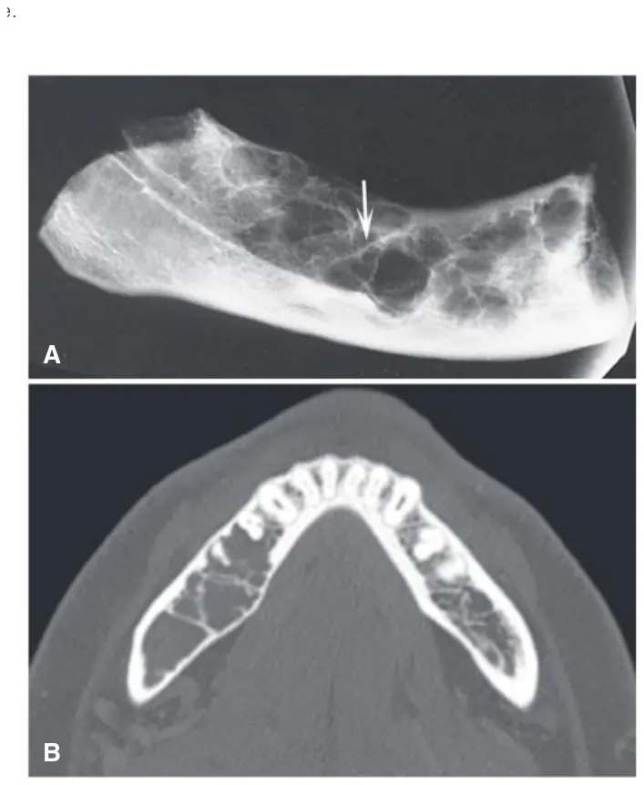
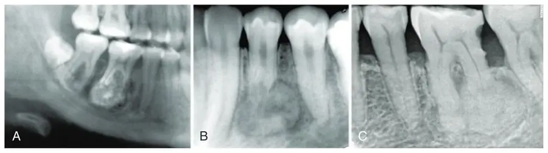

نسخه استخراجشده؛ ترجمه یا تأیید علمی انجام نشده است. وضعیت: captured
میکزوم ادنتوژنیک شبیه بخش مزانشیمی پاپیلای دندانی است و نامش از ماتریکس داخلی شل و ژلاتینی آن میآید. و دلیل قرار گرفتنش در گروه ادنتوژنیک: حضور اپیتلیوم ادنتوژنیک که زیر میکروسکوپ قابل شناسایی است.

اعداد: ۳ تا ۶٪ تومورهای ادنتوژنیک، ترجیح خفیف زنان، بیش از نیمی بین ۱۰ تا ۳۰ سالگی کشف میشوند و پیش از ۱۰ و پس از ۵۰ سالگی نادر است.
و نرخ عود ۲۵٪ — با دلیلی که مستقیماً بر جراحی اثر میگذارد: «فقدان کپسول توده و توانایی ماتریکس میکزوماتوز در گسترش به فضاهای مغز استخوان، جایی که کشف و برداشت جراحیاش دشوار است».
محل: مندیبل با نسبت ۳ به ۱؛ در مندیبل نواحی پرمولر و مولر و بهندرت راموس و کندیل. در ماگزیلا زائدهی آلوئولار پرمولر و مولر و زائدهی زیگوماتیک.
و امضای تصویری میکزوم — این تنها چیزی است که باید از این درس با خودت ببری: استخوان باقیماندهی محبوس در ضایعه، ظاهر مولتیلوکولار میسازد؛ و «بیشتر سپتاها منحنی و درشتاند، ولی یافتن یک یا دو سپتوم مستقیم اغلب به تفسیر این نئوپلاسم کمک میکند». الگوهای توصیفشده — «زهِ راکت تنیس» و «نردبان» — «بهندرت دیده میشوند».
و دو رفتار دیگر که در افتراق کمک میکنند: میکزوم دندانها را جابهجا میکند و آنها را لق میسازد، ولی بهندرت ریشه را تحلیل میبرد؛ و «مانند حفرهی سادهی استخوانی، مکرراً میان ریشههای دندانهای مجاور اسکالوپ میکند». در مندیبل اتساعش کم است — مانند کراتوسیست در طول استخوان رشد میکند — ولی در ماگزیلا اتساع میتواند چشمگیر باشد.
و یک اشتباه رایج تصویری: گاهی ناحیهی کوچکی از اتساع با سپتاهای مستقیم روی کورتکس بیرونیِ سالم پروجکت میشود و ظاهری اسپیکوله میدهد — که ذهن را به سمت بدخیمی میبرد. «بررسی دقیق این ناحیه، یک کورتکس بیرونی نازک ولی سالم را آشکار میکند.»
و MRI اینجا یک نقش اختصاصی دارد: ماتریکس میکزوماتوز «سیگنال بافتی بسیار بالا و مشخصهای در تصاویر T2» میسازد — و همین برای تعیین گستره در استخوان و کشف عود بسیار مفید است. درمان: رزکشن با حاشیهی سخاوتمندانهای از استخوان اطراف.
سمنتوبلاستوما نئوپلاسم کندرشد سمنتوبلاستهاست و به شکل «رشد پیازی سمان که ریشه و آپکس ریشهی یک دندان را در بر میگیرد» تظاهر میکند.

و سه عدد که تشخیص را قفل میکنند: ۷۸٪ روی ریشههای دندانهای مندیبل، و ۹۰٪ روی یک پرمولر یا مولر اول، شایعتر در مردان، با محدودهی سنی ۱۲ تا ۶۵ سال ولی بیشتر بیماران جوانتر.
و دو یافتهی بالینی که باید کنار تصویر بگذاری: پالپ دندان درگیر وایتال است؛ و اگر درد وجود داشته باشد، «اغلب گزارش میشود که با داروهای ضدالتهابی غیراستروئیدی تسکین مییابد» — همان الگوی دردی که در استئوئید استئوما هم دیده میشود.
روی تصویر: ضایعهای مختلط با حاشیهی واضح و کورتیکه. گاهی الگوی «پرههای چرخ» (wheel-spoke) دیده میشود که در آن ساختارهای اوپک از مرکز به محیط میتابند. دانسیتهی تودهی سمانی معمولاً خط ریشهی در بر گرفته را میپوشاند.
و مهمترین نشانهی تصویری سمنتوبلاستوما: تودهی اوپک مرکزی با یک نوار رادیولوسنت احاطه شده است — و معنایش هم روشن است: نشان میدهد «تومور از مرکز به محیط در حال بلوغ است». درمانش درمان ریشه و برداشت ریشه بههمراه توده است.
و فیبروم ادنتوژنیک مرکزی — نئوپلاسمی بسیار نادر که «شبیه میکزوم ادنتوژنیک است»، تا جایی که این دو را گاهی دو سر یک طیف از تومورهای بافت همبند ادنتوژنیک میدانند. دو زیرگروه بافتشناسی دارد — simple و WHO — که «رادیولوژیک قابل تفکیک نیستند».
و یک نشانهی بالینی متمایز که ارزش دارد بدانی: ویژگی غیرمعمول ولی نسبتاً مشخصهی برخی موارد ماگزیلا، وجود یک شکاف یا فرورفتگی در مخاط کام است. بیشتر موارد بین ۱۱ تا ۳۹ سالگی، با برتری روشن زنان به نسبت ۲٫۲ به ۱.